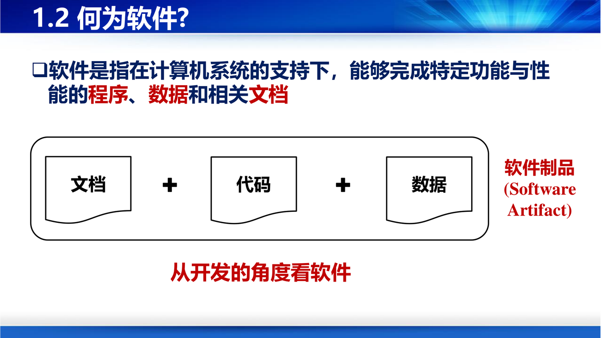
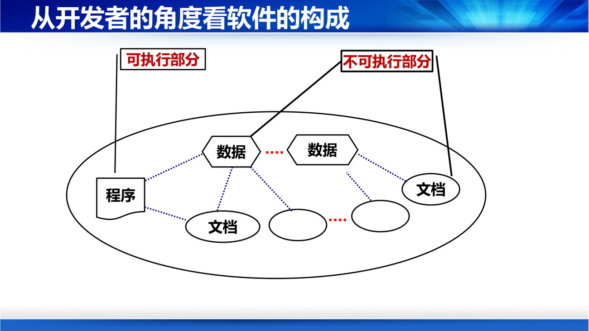

第 1 章的立论很简单："软件"不等于"程序"。听起来像常识，但课件用了二十页去论证，因为这正是后面所有工程活动的合法性来源——如果软件就等于程序，那我们只要写代码就行了，不需要需求、设计、文档、评审。
课件第 4 页画了一条对照线：
建房：了解需求 → 设计图纸 → 进场施工。 写程序：应用（火车票购买、酒店预订、网上购物）→ 分析软件需求 → 设计软件系统 → 编写程序。
"通过一个步骤就将程序写出来不现实。"（PPT 第 4 页）
课件第 5 页进一步指出：编写出程序之后，产出的是代码、文档、数据三样东西，三者"不可或缺、相互依存"。并且下了一个判断：
要编写出高质量的程序，需要循序渐进地开展工作。
补这句话为什么重要？ 因为它把"质量"和"过程"绑在了一起。后面第 3 讲讲过程模型、第 9 讲讲测试、第 10 讲讲维护，全部建立在这个前提上：质量不是最后检验出来的，是过程保证出来的。
课件第 6 页的定义：
软件是指在计算机系统的支持下，能够完成特定功能与性能的程序、数据和相关文档。
从开发的角度看，这三者合起来叫软件制品（Software Artifact）。补"制品"这个词在后面出现频率极高（过程模型每个阶段的产物、配置管理的对象、需求变更影响的东西，都是"制品"），它强调的是可交付、可检查、可版本化——不是"脑子里想清楚了"。

课件第 7 页给了文档的四项作用：定义和理解软件、记录开发成果、辅助不同人员间的交流。常见类型有需求文档、设计文档、测试文档、用户手册。
课件第 8 页追问"为什么需要文档"，理由很有生活感：
于是编写文档的目的就是四件事：阐述清楚（内容、逻辑、条理）、发现问题（完整、一致、矛盾）、开展交流、促进管理。
补一个更实用的理解：文档的真正读者不是"以后的人"，而是"现在的别人"和"三个月后的自己"。三个月后的你已经不记得为什么这么写，跟别人没什么区别。第 10 讲讲维护时说 "50%–90% 的时间被消耗在理解程序上"，那部分时间大部分就是在补当年没写的文档。
课件第 10 页把"数据"拆成五个问题：需要处理哪些数据、如何获得、如何表示、如何存储和检索、如何传输。形式包括用户、订单、交易、日志；处理包括表示、获取、存储、检索、分析。
补为什么数据要算软件的组成部分？ 因为同一段代码配不同的数据结构，性能可能差几个数量级；而且数据往往比代码活得久——代码可以重写，用户十年的订单数据不能重来。第 10 讲把"修改数据结构"列为最危险的一种维护动作，就是这个道理。
课件第 12 页给了一张很实用的图：软件分成可执行部分与不可执行部分。
软件
┌──────┴──────┐
可执行部分 不可执行部分
│ │
程序 ┌───┴───┐
数据 文档

补这张图解释了软件工程为什么"虚"：可执行部分有编译器帮你检查，不可执行部分（数据设计、文档、模型）没有任何工具能自动验证"对不对"。所以这门课的核心能力，是在没有编译器的地方保持严谨。
课件第 13 页写得很直接：
课件第 14 页用两组类比收尾：建设简单平房 vs 建设高楼大厦；挖一条小沟 vs 建设南水北调渠道。结论是：
软件的规模和复杂性意味着要采用行之有效的方法——工程方法。
补这三句话是整门课的"总纲"，可以当作第 1 讲到第 10 讲的目录来看：